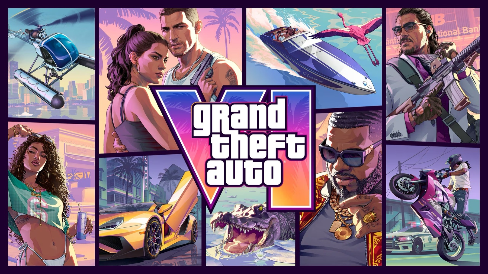

GTA 6: Robberies, Economy & How Money Works Now
TGG ・ @TGG_ ・ 12:48
- 取得方式
- 受邀至 Rockstar North 實機試玩
- 受訪者
- Rob Nelson（GTA 6 開發共同主管）
- 型態
- 具名引述 + 實機畫面
可用。本次唯一有具名開發者背書的來源，等級最高，能承載深度內容。
GTA 6 的爆料週期以天計。下面那則企劃，這週拍是獨家觀點，下週拍就是跟在別人後面。 這正是為什麼這件事需要有人每天做，而不是每季做一次。 這行字本身就是這份樣本最誠實的部分——它不是永久有效的作品集，是一次交付長什麼樣。
職缺說明寫的是「捕捉資訊 → 判斷有沒有流量 → 提出拍攝企劃 → 交給團隊製作」。把它拆開，實際運作是一條有淘汰率的漏斗——今天的淘汰率是 11 進 1 出。
兩支影片同一天出現在訂閱清單裡，標題都像「GTA 6 最新情報」。分辨它們的差別花了十幾分鐘，而這個差別決定了能不能拍。
每條情報進來先歸級，再決定能不能拍、用什麼語氣拍。這四級是固定的，不隨題材鬆動——標準會浮動就等於沒有標準。
兩支影片拆成 11 條可檢驗的主張。以下列出關鍵的 6 條，含唯一通過的那一條與唯一的紅旗。
GTA 6 會在劇情特定節點設現金門檻，玩家必須先達到金額目標才能推進。Rockstar 的說法是要讓故事有時間沉澱、並開啟新的聯絡人。
→ 通過。有具名開發者背書、機制明確、而且一句話講得完。這一則往下走成企劃。
銀行存款（安全）、身上現金（死亡會掉）、行李袋贓物（須找 fence 處理）。搶劫分五級，從手機行、超商到珠寶店、銀行、幫派據點，最上層是劇情大型搶案。銷贓管道依贓物類型分流，且需隨劇情逐步解鎖。
“Making money this way off mission is an important part of the game.” Rob Nelson，GTA 6 開發共同主管 ・ 引自 TGG 訪談 04:58
→ 保留，不是這週的主打。機制紮實但講清楚要 3 分鐘以上，適合長片或系列第二支。
Starfish Island 是 2002 年《俠盜獵車手：罪惡都市》的經典地點。影片指出預告片中出現過寫著 Starfish Island 的路牌——有畫面依據，但依據的是路牌，不是官方說明。
→ 可用，但要降語氣。正確講法是「預告片路牌指向」，不是「官方確認」。懷舊角度有流量，列為備選。
Capri、Naples、Sebring、Lakeland——這四個全部是佛羅里達州真實存在的地名。GTA 6 背景州 Leonida 即以佛州為原型。
→ 這極可能不是「曝光」，而是社群製圖者依真實佛州地理做的合理填補。照原文拍會變成假新聞。
Mount Chiliad 是《俠盜獵車手 V》聖安地列斯州的地標，不在佛羅里達。它出現在一張 Leonida 地圖的北部，最可能是社群製圖的暫定標籤或內部玩笑，而不是 GTA 6 的實際地點。
→ 不拍，並據此下修整份 v16 地圖的可信度。這條是本次判讀最重要的一筆：它證明這份社群地圖裡混有未經查證的填充內容，所以同一支影片的其他地點主張也不能照單全收。
（保留但降級：不排除是製圖者刻意的致敬彩蛋，需向 GTA Inside 社群求證才能定案——我沒查到說明，所以標紅旗而不是標錯誤。）
同一支影片裡，同一個地名被念成三種拼法。這是語音轉錄品質問題，代表任何依賴此逐字稿的地名都必須回原片畫面核對。
→ 全數擱置。地名拼錯上字幕，留言區會抓，而且會連帶質疑整支影片。
被擋下來的東西比通過的更能說明標準在哪。三則各自代表一種不同的否決理由。
素材有流量潛力，但把社群製圖者的合理推測講成官方曝光，是事實錯誤。可以救——改成「社群拼圖 v16 更新，玩家把佛州真實城鎮填進 Leonida」，一樣有看頭，而且是對的。不是砍掉，是重寫框架。
這是本次流量潛力最高的一則，也是最不能碰的一則。跨作品地標回歸的標題必爆，但依據是一份未發布的粉絲拼圖，且與該地標的已知所在州衝突。一條錯的情報換來的留言不是討論，是打臉。對還沒建立信任的新頻道，這種傷害要花很久才補得回來。
畫面有趣、確實是第一手，但它是一個 15 秒的笑點，撐不起一支影片，主體又是開發者的私下反應而非遊戲情報。歸類為素材庫的 B-roll 彩蛋，等做「搶劫機制」那支時當插科打諢用，不獨立成片。
11 條進，1 條出。這是交給製作團隊時我會給的東西——不是「你們拍這個題材」，是可以直接開機的分鏡稿。
選它的理由：來源等級最高（具名開發者）、機制單純到一句話講得完， 而且它會讓玩家自動分成兩派吵架——「這是逼玩家肝」對上「這才叫 RPG」。 留言區的爭議量比觀看數更能餵演算法，這是選題時真正在算的東西。
| 秒數 | 畫面 | 口白 / 字幕 |
|---|---|---|
| 00:00–00:04 | 黑底大字，紅色刪節線劃過「直接看完劇情」 | 你花錢買的 GTA 6，Rockstar 不打算讓你直接看完劇情。 |
| 00:04–00:12 | GTA 5 搶劫任務畫面，右上角錢數飆升 | 以前你在 GTA 5 街上賺的每一塊錢，對主線劇情零影響。錢是錢，故事是故事，兩個世界。 |
| 00:12–00:24 | Extended Look 中 Lucia 走進商店；右上角三種貨幣 UI 特寫 | 六代整個翻掉。銀行存款、身上現金、行李袋裡的贓物，三種錢分開算——死掉的話，身上那份會不見。 |
| 00:24–00:38 | 地圖介面，游標滑過搶劫標記顯示預估收益 | 重點在這裡：劇情走到某些節點會卡住。錢沒賺到門檻，主線不讓你往下走。 |
| 00:38–00:50 | Rob Nelson 姓名職稱字卡，下方壓引述原文 | 這不是猜的。開發共同主管 Rob Nelson 說，任務外賺錢「是這款遊戲很重要的一部分」。他們是故意的。 |
| 00:50–01:00 | 分割畫面：左「這是逼肝」右「這才叫沉浸」，中間問號 | 所以問題來了——為了看下一段劇情先去搶超商，這是沉浸感，還是把手遊的日常任務搬進單機遊戲？留言告訴我。 |
備註給製作：00:38 的字卡務必壓上受訪者職稱與出處，這是這支片與其他 GTA 頻道的差別所在。 引述原文以英文呈現、中文字幕在下，不要只放翻譯——原文本身就是可信度。
職缺說明第 7 條寫「協助建立 GTA 6 遊戲資料庫與內容素材庫」。素材庫的價值不在存了多少連結，在於三個月後還找得到、還知道當初為什麼收。
source_channelevidence_tierclaimtimecodecorroborationdecay_byangle_twstatus
三組可單獨啟動，也可組合。差別在買的是「產出」、「系統」還是「團隊能力」——這三件事的計價邏輯不同，不該混在同一個數字裡談。
由我負責 GTA 6 海外情報精選與短影音企劃撰寫。每期交付結構化情報包與可直接開拍的分鏡稿，含黃金前 3 秒 Hook、畫面建議與爭議點設計，團隊拿到即可開機。
建置專屬情報工作流與 Notion 內容中控台：串接海外 Reddit／X／YouTube 監控、自動去重、依四級標準分流入庫，形成可長期複用的數位素材資產。
為內容團隊舉辦專屬 AI 工作流實戰工作坊：情報翻譯與初篩、選題判斷標準、縮圖 Prompt 與分鏡發想，讓判讀能力留在團隊內部而不是留在外部顧問身上。
建議以第一組的首期交付作為起點：一個獨立計價的交付段，跑完雙方都看得到實際的流量表現與協作節奏， 再決定要不要往第二、三組延伸，或轉為固定編制。 首期是完整的一段交付，不是試用期——它有明確的驗收標準與計價，這樣雙方的期待才對得齊。
這個角色可以用貴司原本規劃的兼職形式合作，也可以用按件計費的外包形式承接。 後者不佔用人力編制、不需要跑聘僱流程，對一條還在驗證的新內容線來說，風險結構比較合理。兩種都能談。
這份文件是格式樣本，不是選題清單。它展示的是一則情報從進來到開拍的完整處理流程、分級標準與素材庫設計。 刻意沒有附上本週其他可開拍的題材——那是這份工作的產出本身。
兩支來源影片是公開影片，所有主張均標註頻道與時間碼可回溯。 我對這兩支影片本身也做了判讀，包括指出其中一支的語氣問題——連參考來源都要質疑，是這份工作的基本動作。
本頁中的 GTA 6 相關內容為公開資訊之整理與評述，視覺為原創繪製，未使用 Rockstar Games 之美術素材。 《Grand Theft Auto》相關商標歸 Rockstar Games 所有，本頁與其無隸屬關係。